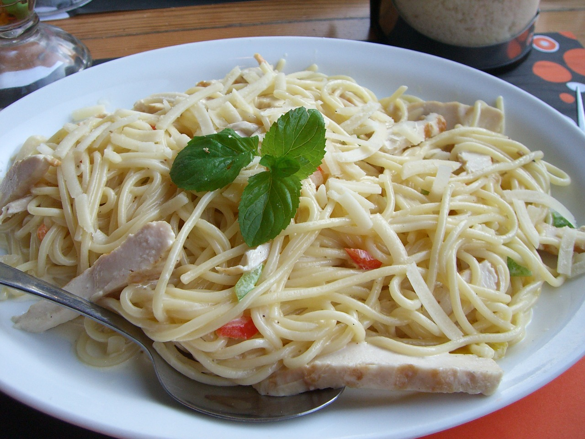

Inicio
Spaguetis

Descripcion
Los espaguetis a la crema es un plato de pasta que se caracteriza por
una salsa cremosa, generalmente hecha con crema de leche, mantequilla y queso, que cubre los
espaguetis.
Es una receta sencilla y popular, especialmente entre niños, por su sabor suave y textura
cremosa.
Ingredientes
- 1 Cucharada grande Mantequilla
- 2 Unidades Ajo Majados
- 1/2 Taza Cebolla Blanca Picadita
- 1 Taza Jamón Cocido picadito
- 1 Unidad Leche Evaporada Carnation UHT 300ml diluida en igual cantidad de agua
- 1 Cucharada grande fécula de maíz disuelta en dos cucharadas de agua
- 1 Tableta Caldo De Gallina Mi Sabor Maggi®
- 0.5 Libra Pasta cocida, enriquecida, sin sal añadida
- 1/2 Taza Parmesano Rallado
- 1/4 Taza Perejil Picadito
Pasos a seguir
- En la mantequilla, sofría por tres minutos, el ajo, la cebolla y el jamón, vierte la Leche
Evaporada CARNATION® UHT, la fécula de maíz y Caldo de Gallina MAGGI® Mi Sabor.
- Cocina moviendo constantemente hasta espesar. Añade los espaguetis, el queso y el perejil,
mezcla bien, retira del fuego, sirve.